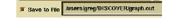

To add additional functions to the selections in the Graph dialog box
1 Select the function(s) in Browser.
2 Click Add Source in the Graph dialog box.
DIScover also lets you create a Graph text report. The Save to File button and corresponding text field let you specify the absolute path for an ASCII report.

If you do not turn this button on, DIScover creates a Graph view.